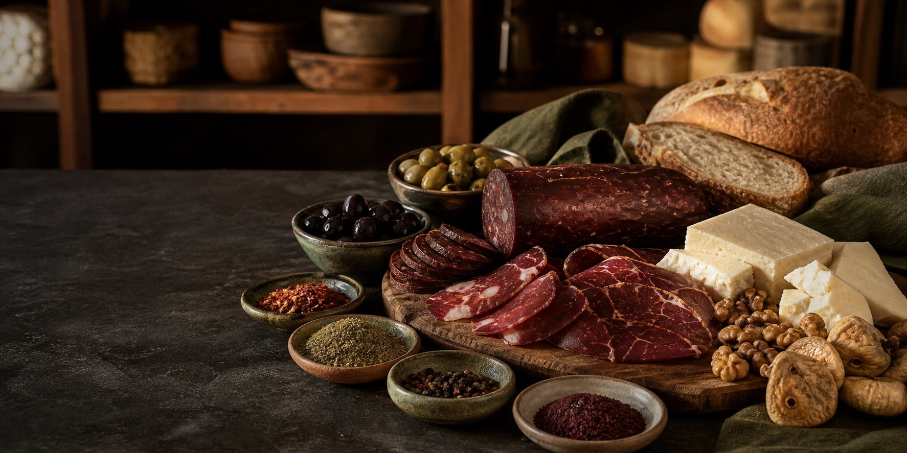

Süt & Yoğurt
Taze Jersey, inek ve manda sütü; ev yapımı yoğurt.

Nilüfer’in yerel şarküterisi
Taze süt ürünlerinden ev yapımı lezzetlere, özenle seçtiğimiz doğal ve gurme ürünlerle hizmetinizdeyiz.
Mahalle sıcaklığı, Anadolu bereketi
Terre Anadolu’da raflarımızı yalnızca severek tattığımız ürünlerle dolduruyoruz. Tazeliği, doğallığı ve emeği öne çıkaran üreticilerin lezzetlerini, güvenebileceğiniz bir mahalle şarküterisinde buluşturuyoruz.
Dükkâna yol tarifi ↗Raflarımızdan
Günlük kahvaltınızdan özenli sofralara, Anadolu’nun sevilen tatları burada.
Taze Jersey, inek ve manda sütü; ev yapımı yoğurt.
Peynir çeşitleri ve sofranın vazgeçilmezi doğal tereyağı.
Kahvaltıya da sofraya da yakışan, seçilmiş şarküteri lezzetleri.
Ev yapımı reçel, sirke, salça ve turşular.
El açması, günlük yufka; ev mutfağının hazır yardımcısı.
Bizim için önemli
Ürünlerimizin hikâyesini bilmek, tazeliğini gözetmek ve size içtenlikle anlatmak işimizin özü.
Altınşehir, Nilüfer